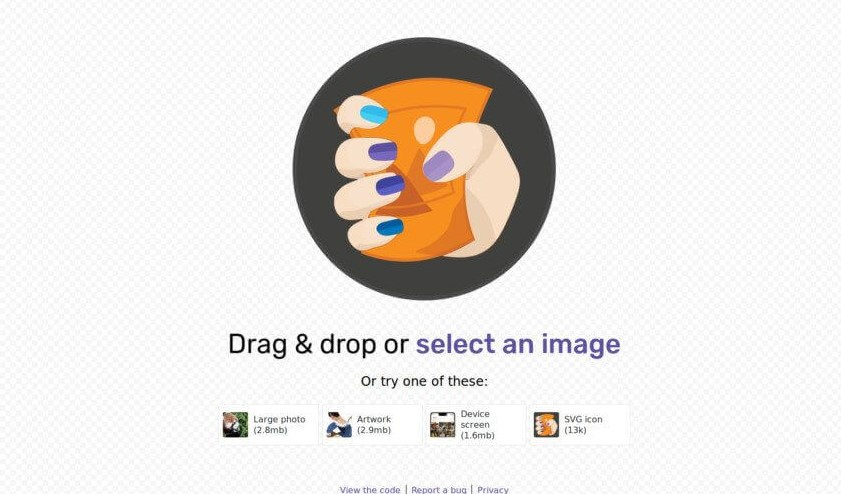

Blogs
Performance and optimization
Code
Coding can be very complicated or it can be simply easy, depends on the coder what techniques they use. I like to keep my coding clean, structured and easy to understand, I like every section to be named and commented. As people tend to forget what they were doing so it better to nama every section accordingly and I have named my sections,class, counters according to the semantics of my HTML marked up content. I started my coding using HTML5 tags including DOCTYPE declaration, meta tags, semantic elements and graphic elements such as svg to create animated vector based graphic. It was my first time using graphic elements which was quite interesting discovering I could create an animated arrow using svg and @keyframes. While writing HTML/CSS I was concentrating on coding sections that float and layout perfectly, I messed up quite a few times but finally I fixed the coding using the flex flow and wrap. However, I was mostly concerned about making the website responsive to fit on mobile screen, setting viewport meta tag and adding screen media using HTML/CSS to automatically resize, hide, shrink, and enlarge solved my problem.

Optimization
To ensure my site loads fast I have optimised all my images to reduce the file size and compress the images without losing huge amount of quality. Larger file sizes made my website speed slower and every image would take a few seconds to load which resulted in my website loading for amount of time after optimizing the images there was a great amount of change which also increased the speed of the website. To compress JPEG files, I used two sites Squoosh and TintJPG both sites were free and fast but squoosh was complicated and the end results did not satisfy me, on the other hand TintJPG was simple and seemed more reliable. TinyJPG reduced the file size of my JPEG images, all the uploaded images were analyzed and applied the best possible JPEG encoding. Based on the content of my images an optimal strategy was chosen automatically, the result is a quality images without wasting storage or bandwidth.
Squoosh website (2019).
TinyJPG website (2019).
SEO integration
To achieve long-lasting, quality results, Search engine optimization needs to be integrated. SEO is the process of increasing the quality and quantity of website traffic by increasing the visibility of a website or a web page to users of a web search engine.To make sure my website is easy to find and my audience are on the right website I have named the website as Zunaira, of course there can be more than one Zunaira with similarities so I decided to add a unique Favicon with my initial. The title for every page is different, and I have added meta tags with descriptions and keywords describing every page.
Technical solutions employedMy main technical issues were to create a responsive site that fits on all the devices. for the sections that did not work well with one or two layouts I have employed 3 layouts/ media screen queries for different screen widths .

Small: Media screen max-width 600px
Medium: Media screen max-width 600px - 800px
Large: Media screen max-width over 800px
Although these layouts include the same font elements and graphics but they are designed to display the content based on the screen.
Reference:
Squoosh.app. (2019). Squoosh. [online] Available at: Link [Accessed 10 Nov. 2019].
Tinyjpg.com. (2019). TinyJPG – Compress JPEG images intelligently. [online] Available at: Link [Accessed 10 Nov. 2019].
99designs. (2019). How to get started with responsive website design. [online] Available at: Link" [Accessed 10 Nov. 2019].